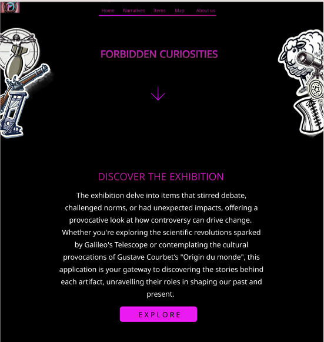

This project delves into items that stirred debate, challenged norms, or had unexpected impacts, offering a provocative look at how controversy can drive change. Bridging the gap between physical exhibits and digital engagement, the project aims at fostering deeper understanding and reflection on the dynamic intersections of culture, science, and societal evolution.
Whether you're exploring the scientific revolutions sparked by Galileo's Telescope or contemplating the cultural provocations of Courbet’s "L’Origine du Monde", this application is your gateway to discovering the stories behind each artifact, unravelling their roles in shaping our past and present.
Visitors can enjoy a journey through history with this digital companion, empowering them to explore, learn, and reflect on the controversies and innovations that have shaped our world.
This project introduces a framework for virtual exploration and narrative engagement with a collection of physical artifacts. The exhibition focuses on items that have sparked debate, challenged societal norms, or catalyzed unexpected impacts, providing a thought-provoking examination of how controversy can drive societal change.
The digital companion facilitates immersive experiences for visitors, offering in-depth narratives and multimedia content that illuminate the significance of each artifact. Through the digital application, visitors are invited to embark on a journey through history, enabling them to explore, learn, and contemplate the controversies and innovations that have shaped our collective past and present.
As visitors navigate the exhibition, the app offers detailed descriptions and narratives tailored to enhance their understanding based on their interests and background. For those on the go, concise summaries highlight key facts and significance. For educators and curious minds, delve deeper with pedagogical insights and historical contexts, fostering a deeper appreciation of each artifact's impact.
The main objectives of the web application for visiting the exhibition are to provide users with an interactive and informative experience that enhances their engagement with the physical artifacts on display. The website will serve as a comprehensive digital companion, aiming to achieve the following:
See here the full dataset of the items.
The team selected the following items.
| Item Title | Narratives | ||
|---|---|---|---|
| Period | Theme | Typology | |
| 1. Arquebus | XV-XVII Century | Ethics of war | Weapon |
| 2. Vitruvian Man | XV-XVII Century | Religious dissent | Artwork |
| 3. Luther’s 95 Theses | XV-XVII Century | Religious dissent | Text |
| 4. Galileo's Telescope | XV-XVII Century | Scientific revolution; Religious dissent | Tool |
| 5. Victorian Corset | XVIII-XIX Century | Women's history | Garment |
| 6. Guillotine | XVIII-XIX Century | Etichs of war | Weapon |
| 7. On the Origin of Species, Darwin | XVIII-XIX Century | Scientific revolution; Religious dissent | Text |
| 8. Origine du Monde by Gustave Courbet | XVIII-XIX Century | Provocative art | Artwork |
| 9. Marie Curie’s Studies | First half of XX Century | Women's history; Scientific revolution | Text; Event |
| 10. Suffragettes' Hunger Strike Medal | First half of XX Century | Women’s history | Event |
| 11. Enigma Machine | First half of XX Century | Ethics of war; Digital privacy | Tool |
| 12. "Little Boy" Atomic Bomb | First half of XX Century | Ethics of war | Weapon |
| 13. PlayBoy Magazine's first issue | Second half of XX Century | Women's history | Text |
| 14. Mini-skirt by Mary Quant | Second half of XX Century | Women's history | Garment |
| 15. Nasa Moon Landing photo | Second half of XX Century | Scientific revolution | Event |
| 16. "Shoot" by Chris Burden | Second half of XX Century | Provocative art | Artwork |
| 17. Dolly the Cloned Sheep | Second half of XX Century | Scientific revolution | Event |
| 18. "For the Love of God" by Damien Hirst | XXI Century | Provocative art | Artwork |
| 19. Snowden’s Revelations | XXI Century | Digital privacy | Event |
| 20. AI Image of Pope Francis | XXI Century | Digital privacy; Religious dissent | Artwork |
The exhibition map has the purpose to guide the user during the exhibition. The user selecting a specific narrative will see where each object related to that narrative is placed in the exhibition space. Also, there is the possibility to access the description of each object.
The texts of the visit are organized around a set of narratives, guiding visitors through the rooms in a purposeful way rather than allowing them to wander randomly. This structure encourages visitors to move back and forth as they follow the specific storytelling approach of the app. As a result, the order, and even the inclusion, of each item in the visit depends entirely on the narrative chosen by the visitor, with the interface adjusting accordingly.
By choosing from these narratives, visitors can tailor their experience to their interests, with the interface dynamically adjusting to support their chosen perspective. This tailored approach not only enriches the visitor's engagement with the content but also enhances the overall effectiveness of the storytelling within the app.
This narrative breaks down the content into specific time periods, including the XV-XVII centuries, XVIII-XIX centuries, the first half of the XX century, the second half of the XX century, and the XXI century. This approach allows visitors to experience the exhibits in chronological order, providing a historical context to the artifacts.
Visitors can explore the exhibits through various thematic lenses, such as Women's History, the Scientific Revolution, the Ethics of War, Religious Dissent, Provocative Art, and Digital Privacy. This narrative emphasizes the thematic connections between different artifacts and events, offering a deeper understanding of the issues and ideas represented.
This narrative categorizes the exhibits by their types, including Event, Text, Tool, Artwork, Garment, and Weapon. By focusing on the nature of the artifacts themselves, this approach allows visitors to explore the diverse forms of historical and cultural objects on display.
To see more about these narratives, visit the online platform of the application, either in its desktop version or smartphone.
The Figma prototype was created to provide a detailed visualization of the website's structure, layout, and key interactive features. It serves as a practical guide for translating design concepts into the final product. By focusing on the user interface and navigation flows, the prototype lays the foundation for both the development process and the overall user experience.
This prototype emphasizes high usability and accessibility while maintaining a visually engaging aesthetic. The dynamic and interactive elements included in the design aim to enhance user engagement and simplify content exploration.
This prototype provides a comprehensive foundation for translating the website’s design vision into reality, ensuring a cohesive and user-friendly end product.
To create a dynamic visualisation of informations about each object avoiding the use of multiple html pages and given that a server use was not allowed, it was decided to store in a json file all the info needed. Using an async function when the html document is loaded the file json is read and the objects informations are stored in variables. A default show is set (the items of the first period, XV-XVII century), unless the redirect variable is set to true, as previously explained. The data of each object are dinamically organized in a table. Here the json file: items.json
Explanation of the data structure: the "@sort" attribute was set according to the historical data. Its a value that goes from 1 to 20 and it's used to order the object when displayed in any narrative; the "shortName" is used to populate the title row of the table element; the "image" is used to retrive the corresponding image in the assets to be shown beside the table; "shortInfo", "longerInfo" and "fullInfo" are used to populate the description element. On "fullInfo" we will come back soon; the information inside "info" is used to populate the table element. "Title" was used to populate the Header of the table; "Exhibition" "Themes" "Historical Period" "Typology" are used to populate buttons that are used to create an objects set of that specific narrative.
About the fullInfo link. It was thought it would be more practical to write the complete description of the object in a separate html object in order to better organize the content and to not bear excessively weight on the json file. Here an mpck example of a fullInfo html file to understand the structure: example
The technical implementation of this project revolves around dynamically handling and displaying data loaded from a JSON file. Its technical implementation is centered on creating an interactive experience where data is fetched, filtered, sorted, and displayed in response to certain predefined rules or user actions.
At its core, the project begins by leveraging the `DOMContentLoaded` event listener to ensure all DOM elements are fully loaded before executing JavaScript. Once the event triggers, an asynchronous function is executed to fetch the .json file, which contains both the data and metadata needed for the application. This file is parsed into JavaScript objects, and key pieces of information, such as the starting narrative, value, and items, are extracted for further use.
The project utilizes a prepareNarratives function to process the data according to the selected narrative and value. This function filters the items array to match specific conditions based on the metadata. It then sorts the filtered items using a custom comparator that orders them based on a sorting property (`@sort`). If no matching items are found after filtering, the function reverts to using the entire dataset. Once the relevant data is prepared, additional helper functions are called to update the state of the application and render the information for the user.
The technical design is modular, with specific tasks divided into discrete functions. The use of promises, asynchronous operations, and event listeners highlights the project's focus on asynchronous workflows and responsive design. Callback functions are used to handle events and trigger processes, such as updating the DOM after preparing the narratives. The implementation adheres to modern JavaScript standards, including `async`, optional chaining (`?.`), and array methods like `filter` and `sort`. These tools help streamline the handling of dynamic data and ensure the project is maintainable and scalable.
The application develops personalized narratives for three different user personas, customize the level of detail and language complexity based on each user's age, competencies, native language and available time.
To see more about these descriptions, visit the online platform of the application.
The website for "Forbidden Curiosities" features a minimalist, modern design with a clean layout. It uses bold typography, clear section headers, and ample white space to enhance readability. The home page showcases striking visuals, including a header image with a compelling title and a scrolling interface. Informational sections about the exhibition and its logistics are interspersed with artistic visuals and engaging descriptions, maintaining a balanced focus on functionality and aesthetic appeal.
The Home page of the website introduces the theme with bold visuals and concise text, inviting exploration. The Narratives page uses a mix of text and images to tell stories, with a structured, scrolling format. The Items page presents a grid layout showcasing artifacts, blending visuals and short descriptions. The Timeline page organizes information chronologically in a sleek, linear format. The Map page offers an interactive design for spatial exploration. Each page prioritizes readability and immersive visuals while maintaining intuitive navigation.
The color palette for this website creates a visually engaging and harmonious experience, combining neutral tones, vibrant accents, and deep, contrasting backgrounds. The primary background color, #140221, establishes a dark and dramatic foundation that allows other colors to stand out, while the text color, #e5e5e5, ensures high readability with a soft contrast against the dark background.
Neutral shades like #cacaca and #d1c2adda are used for subtle elements like dividers, providing balance and cohesion without overwhelming the design. Accents such as #f7d9ad and #d7b052 add warmth and elegance, highlighting titles and buttons while maintaining a sense of sophistication.
Vivid colors like #542E71 for home panels and #de7b0a for links and narrative buttons introduce energy and vibrancy, drawing attention to interactive and dynamic sections. The footer color, #3b373dc7, complements the overall theme with a muted tone, creating a seamless transition at the bottom of the page. The deep purple shade, #2B1F4D, ties the palette together with a sense of depth and richness, reinforcing the site's bold yet approachable aesthetic.
In summary, a dark color for the background is chosen for its ability to enhance content visibility, reduce eye strain, improve battery efficiency, and maintain a modern aesthetic. It aligns with the app's brand identity and provides a user-friendly experience that supports extended use and visual comfort.
The typographic choices for this website reflect a thoughtful approach to balancing elegance, readability, and modernity across different sections of the interface. For headers, the use of Garamond, a classic serif font, conveys sophistication and a sense of timelessness. This makes it particularly suitable for emphasizing titles and creating a strong visual hierarchy that draws attention to key content.
For the main body text, Trebuchet MS, a sans-serif font, is selected for its clean and legible design. Its modern yet approachable style ensures that large blocks of text are easy to read on screens, enhancing user experience without sacrificing aesthetic appeal.
The Roboto Condensed font in the navbar offers a sleek and contemporary look, well-suited for navigation elements. Its condensed form optimizes space, allowing for efficient use of the horizontal layout while maintaining clarity and visual appeal.
Finally, the choice of Tahoma for buttons prioritizes functionality and readability. Tahoma’s robust and straightforward design ensures that call-to-action elements are both noticeable and easy to interact with, even at smaller sizes, reinforcing usability while complementing the overall typographic scheme. Together, these fonts create a cohesive visual identity that balances elegance, modernity, and user-friendliness.
All copyright on the typographic and layout choices are 2024 © Lucrezia Pograri, Romolo David d'Alessandro, Pietro Tisci.
Credits for the backgorund video animation in the homepage belong to © Pascal C. .